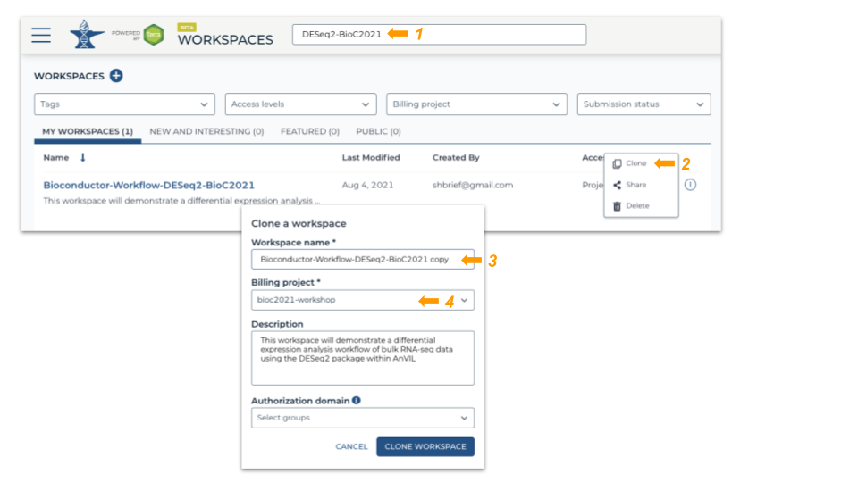
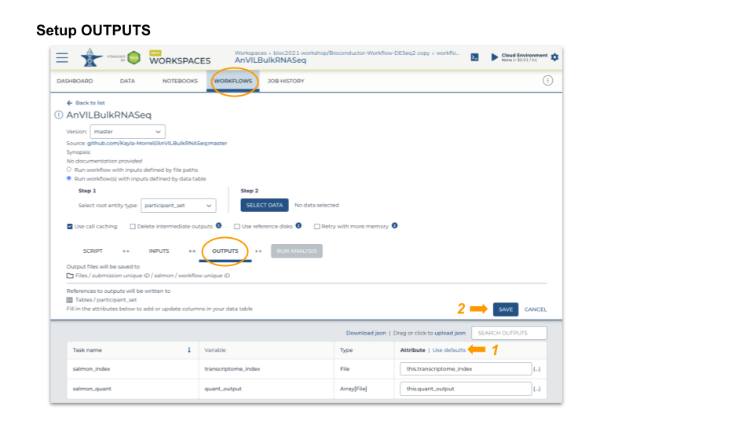
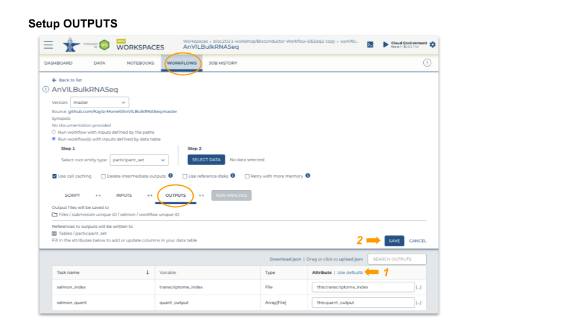

RNAseq analysis
Clone workspace
This workspace performs bulk RNASeq differential expression from FASTQ files. Salmon quantification step is implemented in WORKFLOWS and the downstream analysis by DESeq2 is available under NOTEBOOKS.
- Login to Terra and navigate to “Bioconductor-Workflow-DESeq2” workspace
- Clone this workspace:
- Assign a unique workspace name
- Use the billing project, “bioc2021-workshop”

Run workflow
- Inputs
- Transcriptome fasta file
- Per-sample paired-end fastq files
- Transcriptome fasta file
- Outputs
- Per-sample counts of reads aligned to known transcripts
- ‘Ultra fast’ aligner: should take about 20 minutes for the largest fastq file
- Per-sample counts of reads aligned to known transcripts
- Launch
- SELECT DATA from participant_set
- Connect workflow INPUTS to columns in the participant table (FASTQ files), workspace bucket (transcriptome FASTA file), or direct entry (transcriptome name)
- Use default OUTPUTS
- SAVE
- RUN ANALYSIS
 

Downstream analysis
- Start a Jupyter Notebook interactive environment

- Package update
- When the runtime is ready, launch an interactive shell to update packages
- An interactive shell is ‘better’ for updating packages because we can see progress/errors; these are hidden by the Jupyter notebook
- Start R, update installed packages, and install current version of the AnVIL package
root@...> R
options(Ncpus = 2) # faster installation, even if runtime 'oversubscribed'
BiocManager::install(ask = FALSE) # update installed packages
pkgs <- c("Bioconductor/AnVIL", "GenomicFeatures", "tximport", "DESeq2")
BiocManager::install(pkgs) # latest AnVIL packageGenomicSuperSignature
AnVILPublish
Package installation
If necessary, install the AnVILPublish library.
if (!"AnVILPublish" %in% rownames(installed.packages()))
BiocManager::install("AnVILPublish")
#> 'getOption("repos")' replaces Bioconductor standard repositories, see
#> '?repositories' for details
#>
#> replacement repositories:
#> CRAN: https://packagemanager.rstudio.com/all/__linux__/focal/latest
#> Bioconductor version 3.14 (BiocManager 1.30.16), R 4.1.0 (2021-05-18)
#> Installing package(s) 'AnVILPublish'
#> also installing the dependencies 'bit', 'bit64', 'progress', 'hms', 'vroom', 'tzdb', 'readr'There are only a small number of functions in the package; it is likely best practice to invoke these using AnVILPublish::...() rather than attaching the package to the search path.
The gcloud SDK
It is necessary to have the [gcloud SDK][https://cloud.google.com/sdk] available to copy notebook files to the workspace. Test availability with
AnVIL::gcloud_exists()and verify that the account and project are appropriate (consistent with AnVIL credentials) for use with AnVIL.
AnVIL::gcloud_account()
AnVIL::gcloud_project()Note that these be used to set, as well as interrogate, the account and project.
notedown software
Conversion of .Rmd vignettes to .ipynb notebooks uses [notedown][https://github.com/aaren/notedown] python software. It must be available from within R, e.g.,
system2("notedown", "--version")Workspace from package source
AnVILPublish::as_workspace(
"path/to/package",
"billing-project-name", # i.e., billing account
create = TRUE # use update = TRUE for an existing workspace
)Below is the script I ran to create this workspace (link).
AnVILPublish::as_workspace(
path = "~/data2/GenomicSuperSignature/", # package source
namespace = "bioc2021-workshop", # billing account
create = TRUE,
use_readme = TRUE
)Analysis in RStudio
You can choose the cloud environment of your workspace at the project level. Currently, to use RStudio in Terra, you should use one of the custom environments. Below screen captures show how to do it.
 Once your RStudio is running, clone the git repository.
Once your RStudio is running, clone the git repository.
git clone https://github.com/shbrief/GenomicSuperSignaturePaper.gitMicrobiome analysis
Runnable workflow package
For R users with the limited computing resources, we introduce RunTerraWorkflow package. This package allows users to run workflows implemented in Terra without writing any workflow, installing softwares, or managing cloud resources. Terra’s computing resources rely on Google Cloud Platform (GCP) and to use RunTerraWorkflow, you only need to setup the Terra account once at the beginning.
Using AnVIL package, RunTerraWorkflow allows users to access both Terra and GCP through R session from a conventional laptop, greatly lowers the learning curve for high-performance, cloud-based genomics resources.

bioBakery
bioBakery workflows is a collection of workflows and tasks for executing common microbial community analyses using standardized, validated tools and parameters. bioBakery is built and maintained by Huttenhower lab.
You can find the usecase example of running Terra-implemented bioBakery workflow (Whole Metagenome Shotgun (wmgx) workflow version 3) using RunTerraWorkflow package HERE.